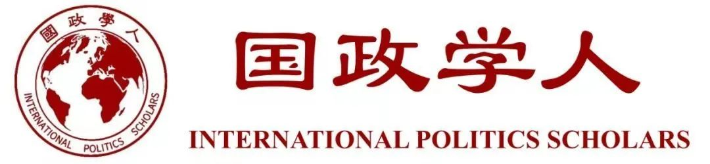
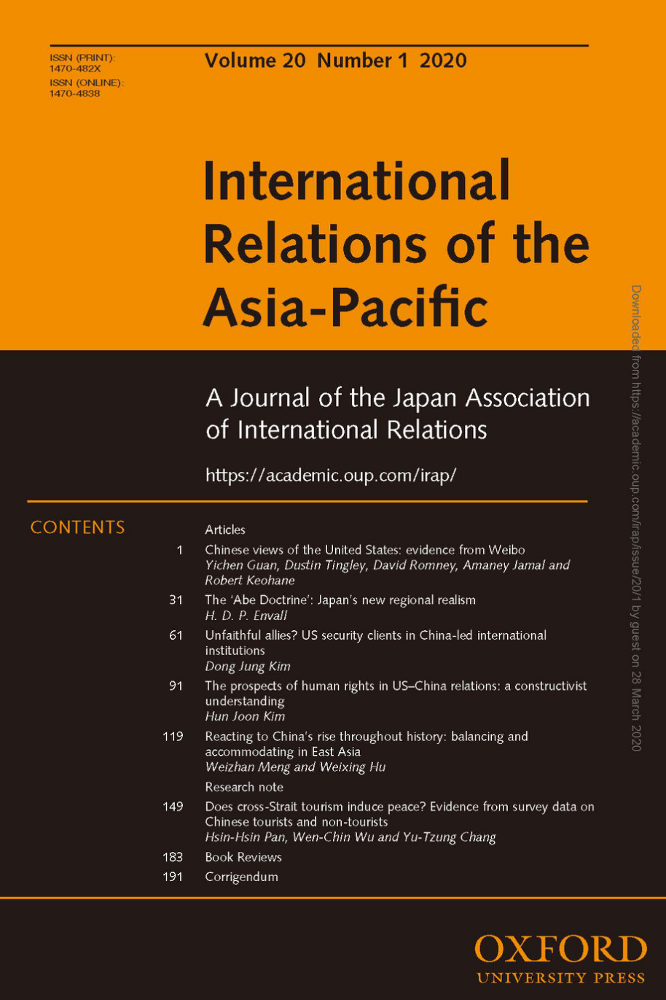

收录于合集 #新刊速递 123个



期刊简介

International Relations of Asia-Pacific ，成立于2001年，由牛津大学出版社代表日本国际关系协会出版，每年1月、5月和9月出版共三次。该期刊主要关注亚太地区的国际政治动态，包括中国国内政治、美国在亚太地区的地位、地区治理、日本对外关系、亚洲与国际关系理论、中国的全球化道路以及中国的国家认同等。根据2018 Journal Citation Reports显示，其影响因子为1.233。
本期编委
【编译】 戴赟 冯毓婧 姚寰宇 刘颖哲 朱曈菲
【审校】 李思 李博轩 王国欣 姚寰宇
【排版】 梁鑫昱
本期目录
1.从微博看中国对美国的看法
Chinese views of the United States: evidence from Weibo
**
**
2.“安倍主义”：日本的新区域现实主义
The ‘Abe Doctrine’: Japan’s new regional realism
**
**
3.不忠的盟友？中国领导国际制度中的美国安全委托国
Unfaithful allies? US security clients in China-led international institutions
**
**
4. 中美关系之人权前景：一种建构主义的理解
The Prospects of Human Rights in US-China Relations: A Constructivist Understanding
**
**
5.纵观历史上对中国崛起的反应:东亚地区的制衡与适应
Reacting to China’s rise throughout history: balancing and accommodating in East Asia
1.
从微博看中国对美国的看法
【题目】 Chinese views of the United States: evidence from Weibo
【作者】 官逸尘（Yichen Guan）,哈佛大学政府学系博士生；Dustin Tingley, 哈佛大学政治系教授；David Romney ，哈佛大学政府学系博士生；Amaney Jamal ，普林斯顿大学政治学教授；Robert Keohane ，普林斯顿大学伍德罗·威尔逊学院政治学教授。
【摘要】
通过分析中国社交媒体网站，即微博上的社交媒体话语，我们研究了中国对美国的态度，其次是中国对日本，俄罗斯和越南的态度。我们分别着重研究了普遍性的态度分析以及涉及美国的特定事件时中国的反应。总体来看，我们发现中国网民对美国政治的兴趣远大于对美国社会的兴趣。他们对美国的看法存有强烈的矛盾情绪。无论是在经济、政治、思想还是文化上，中国网民对美国影响力的各个方面都持有显著的正面态度。而当焦点转向美国外交政策时，网民对美国便持有负面态度。他们认为美国的行动往往与中国针锋相对。相反，中国网民对日本，俄罗斯和越南的态度却千差万别。一方面，中国网民对其他国家与对美国的态度存在差异。另一方面，在中东地区反美主义占据着主导地位。这两方面的对比是惊人的。
【原文】
We study Chinese attitudes toward the United States, and secondarily toward Japan, Russia, and Vietnam, by analyzing social media discourse on the Chinese social media site, Weibo. We focus separately on a general analysis of attitudes and on Chinese responses to specific international events involving the United States. In general, we find that Chinese netizens are much more interested in US politics than US society. Their views of the United States are characterized by deep ambivalence; they have remarkably favorable attitudes toward many aspects of US influence, whether economic, political, intellectual, or cultural. Attitudes toward the United States become negative when the focus turns to US foreign policy - actions that Chinese netizens view as antithetical to Chinese interests. On the contrary, attitudes toward Japan, Russia, and Vietnam vary a great deal from one another. The contrast between these differentiated Chinese views toward the United States and other countries, on the one hand, and the predominant anti-Americanism in the Middle East, on the other, is striking.
【编译】 戴赟
【审核】 李思
2.
“安倍主义”：日本的新区域现实主义
【题目】 The ‘Abe Doctrine’: Japan’s new regional realism
【作者】 H.D.P. Envall，澳大利亚国立大学国际关系专职研究员。
【摘要】
自2012年以来，日本首相安倍晋三一直试图重塑日本的外交和安全政策。安倍的议程也逐渐被称为“安倍主义”(Abe Doctrine)。然而，“安倍主义”的实质引发了相当多的争论：安倍主义究竟是民族主义、修正主义还是现实主义的？本文通过研究安倍主义充满矛盾性的政策理念，并根据安倍主义的政策处方评估这些政策理念，从而为这些争论做出一定的贡献。文章认为，处在日本政策制定的长期演变过程中的安倍主义，在其政策处方上主要是现实主义的，而不是民族主义的。事实上，直到现在，安倍主义才被认为与过去的政策实践大相径庭，这一点并不体现在它如何扩大了日本在国际上的作用，而是体现在它如何减小了日本在国际上的作用（即更强调地区性的作用）。因此，安倍主义的基本逻辑可能推动日本走上一条新的区域现实主义道路。
【原文】
Since 2012, Japan’s Prime Minister Abe Shinzo has sought to remake the country’s foreign and security policy. Abe’s agenda, which is increasingly called an ‘Abe Doctrine’, has prompted considerable debate as to its true nature. Is the Abe Doctrine nationalist, revisionist, or realist? This article contributes to these debates by tracing the competing characterizations of an Abe Doctrine’s policy ideas and assessing these against the doctrine’s policy prescriptions. It argues that the Abe Doctrine–situated within the long-term evolution of Japanese policymaking – is chiefly realist rather than nationalist in its policy prescriptions. In fact, where the doctrine does constitute a major departure from past policy practice, largely unrecognized until now, is not so much in how it expands Japan’s international role but in how it narrows this role. The underlying logic of the Abe Doctrine may therefore be pushing Japan towards a new form of regional realism.
【编译】冯毓婧
【校对】李思
3.
不忠的盟友？中国领导国际制度中的美国安全委托国
【题目】 Unfaithful allies? US security clients in China-led international institutions
【作者】 Dong Jung Kim，耶鲁-新加坡国立大学学院（Yale-NUS College）助理教授。
【摘要】
本文考察了美国的安全委托国在支持美国国际地位挑战者所领导的国际制度时的决定。安全委托国的决定受到两个因素的影响：(1)挑战者所领导的制度的性质， (2)委托国在地区安全环境中所处的地位。作者认为，当挑战者主导的制度是旨在对美国主导的制度框架进行补充而不是与之竞争时，面临广泛安全问题的委托国更有可能对其进行支持。相比之下，当挑战者主导的制度旨在与以美国主导的制度进行竞争时，受到挑战者所带来的明确安全威胁的委托国则不会对其进行支持。对2014年至2016年间日本和韩国在对中国主导的两个制度所作出的回应的案例研究印证了这一观点。
【原文】
This article examines a US security client’s decision to support an international institution led by a challenger to its patron’s leadership position in the international system. Two factors together shape the client’s decision: (i) the nature of the institution led by the challenger and (ii) the position of the client in the regional security environment. I argue that a challenger-led institution that aims to complement rather than compete with the institutional framework of the US-led order is likely to be supported by the client that is only facing a diffused security concern from the challenger. In contrast, the challenger’s institution that is designed to compete with US-led institutions will not be supported by the client that is facing a specific security concern from the challenger. This argument is substantiated by case studies of Japanese and South Korean responses to two China-led institutions between 2014 and 2016.
【编译】 姚寰宇
【校对】 李博轩
4.
中美关系之人权前景：一种建构主义的理解
【题目】 The Prospects of Human Rights in US-China Relations: A Constructivist Understanding
【作者】 Hun Joon Kim，高丽大学政治学与国际关系系教授。
【摘要】
中美关系在人权领域的前景如何？怀疑论者认为，人权不再是中美之间的问题。传统权力政治对中美关系的理解忽略了规范的作用，而建构主义的观点承认规范的独立影响。本文将中美权力政治的传统理解与建构主义的规范研究联系起来。建构主义的规范理论有三个密切相关的发现：规范的历史建构（historical construction）、规范的长期且多方面的影响、规范的持久性（persistence），它们可以被用来预测中美关系中的人权状况。基于这些理论的预测，本文认为：尽管中美在人权领域的趋同并非完全不可能，但过去的竞争与对抗将会延续下去，人权仍将是中美关系中颇受争议的问题。
** 【原文】**
What are the prospects of U.S.-China relations in the area of human rights? Skeptics maintain that human rights is no longer an issue between the United States and China. A traditional understanding of U.S.-China relations ignores the role of norms, while the constructivist perspective recognizes their independent effects. This paper links the traditional understanding of power politics between the United States and China with the study of constructivist norm research. The three findings of constructivist norm theories are relevant and applied to predict the status of human rights in U.S.-China relations: the historical construction of norms, the long-term and multifaceted effects of norms, and the persistence of norms. Based on these theoretical predictions, it is expected that, although convergence is not completely impossible, the past dynamic of competition and confrontation will continue and human rights will still be a contentious issue in U.S.-China relations.
【编译】 刘颖哲
【校对】 王国欣
5.
纵观历史上对中国崛起的反应:东亚地区的制衡与适应
【题目】 Reacting to China’s rise throughout history: balancing and accommodating in East Asia
【作者】 孟维瞻(Weizhan Meng)，复旦大学中国研究院助理研究员兼助理教授；胡伟星(Weixing Hu) ，香港大学政治与公共行政学系名誉教授。
【摘要】
学界对中国的崛起及其他国家对此的反应进行了广泛的研究。但是，对于历史上其他国家如何应对中国的崛起，以及中国如何与这些国家进行战略互动的研究却相对较少。传统观点认为，东亚国家间的关系并不是以威斯特伐利亚体系的模式运作的，中国在历史上的崛起并未引发这一地区的制衡行为。本文对此观点提出了挑战。我们认为，东亚国际关系并不是威斯特伐利亚体系基本规则的例外。中国的每一次崛起，都会引发包括游牧帝国与定居王国在内的周边政权的制衡行动。只有在被中国或亲中国政权击败后，这些邻国才会接纳中国。在东亚历史上，中国的霸权并不是理所当然的。在过去的2000多年里，只有在三个时间段（秦汉，隋唐，明清）中，中国可以成功压制区域内的抵抗并且与邻国保持稳定的朝贡关系。在其余的时间内，中国无法在东亚维持霸权地位。
【原文】
The rise of China and how other countries respond to China’s rising is widely studied. But little has been done on how other countries reacted to the rise of China throughout history and how China strategically interacted with them. The conventional wisdom holds East Asian inter-national relations did not operate in the Westphalian way and China’s rising in history did not trigger regional balancing actions. In this article, we challenge that view. We argue East Asian international relations were not exceptional to basic rules of the Westphalian system. Each time China rose up, it triggered balancing actions from neighboring regimes, including nomadic empires and settled kingdoms. The neighboring regimes would accommodate China only after they were defeated by China or pro-China regimes propped up in these countries. The Chinese hegemony in East Asian history could not be taken for granted. Over last 2,000 plus years, only during three periods of time (the Qin-Han, Sui-Tang, and Ming-Qing dynasties) China could successfully overpower regional resistance and enjoyed a stable tributary relationship with neighboring states. In the rest of time, the Chinese state could not retain hegemony in East Asia.
【编译】 朱曈菲
【校对】 李博轩
【新刊速递】 第15期 | International Organization, No.4,
2019
【新刊速递】第16期 | International Studies Quarterly, No.4,
2019
【新刊速递】第17期 | World Politics, Vol.72, No.1,
2020
【新刊速递】 第18期 | Security Studies Vol.28, No.5,
2019
【新刊速递】第19期 | Review of International Studies, No.1,
2020
【新刊速递】第20期 | International Studies Quarterly, No.4,
2019
【新刊速递】第21期 | International Security, Vol. 44, No. 3,
2019
【新刊速递】第22期 | Security Studies Vol.29, No.1,
2020
【新刊速递】 第23期|Cooperation and Conflict,Vol.55, No.1,
2020
【新刊速递】 第24期 | International Organization, Vol. 74, No.1,
2020
【新刊速递】第25期 | Review of International Studies, Vol.46, No.2,
2020

国政学人
支持学术公益与知识传播
微信扫一扫赞赏作者 __赞赏
已喜欢，对作者说句悄悄话
取消 __
发送给作者
发送
最多40字，当前共字
上一页 1/3 下一页
长按二维码向我转账
支持学术公益与知识传播
受苹果公司新规定影响，微信 iOS 版的赞赏功能被关闭，可通过二维码转账支持公众号。